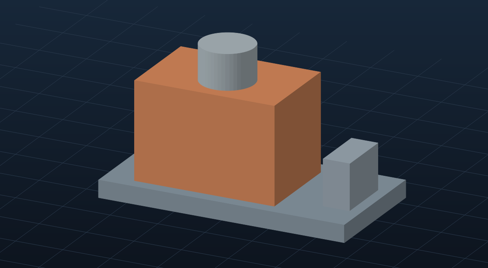
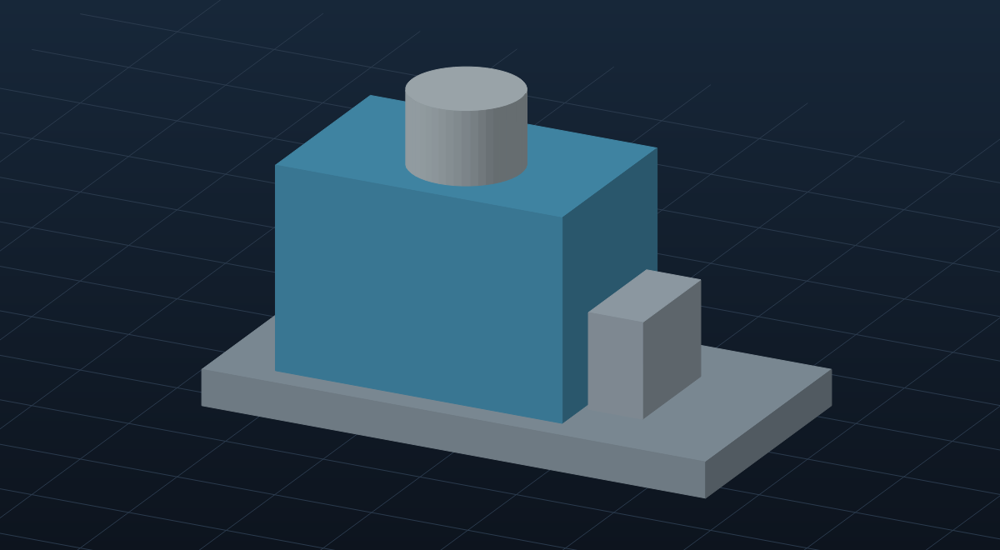

Pump publish review
Drag the divider to compare the two publishes. Select a finding to see where the change was authored.
A/B comparison
Fixed-camera previews

Drag the divider to compare the two publishes. Select a finding to see where the change was authored.

